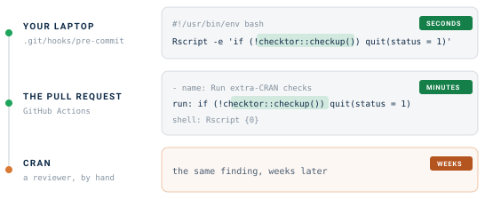
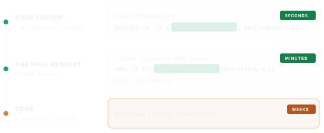

# A throwaway package that deliberately uses T/F instead of TRUE/FALSE
bad_pkg <- example_diagnose_scenario("code_examples/tf_usage_bad.R",
show_content = FALSE)
checkup(bad_pkg)
#> [1] FALSEYou can run checktor by hand, and you will, whenever you remember to. Continuous integration (CI) remembers for you, on every push and pull request, for every contributor. CI asks checktor two questions. checkup() answers whether the build should pass. ci_report() answers where the problems are, by putting each finding on the line that caused it.
Gate the build on checkup()
checkup() gives a CI gate its one answer, pass or fail. It runs the full diagnosis without printing and returns TRUE when the package is in good overall health. By default that means no policy or robustness finding remains, and opinion findings do not count against it.
This package returns FALSE, and a healthy one returns TRUE. That is all a build needs to decide between green and red.
Annotate the diff with ci_report()
Red tells you that something failed, not what or where. ci_report() turns each finding into the format your forge reads, so it appears beside the line that caused it. These are the first three for the package above, as GitHub Actions would receive them.
annotations <- ci_report(path = bad_pkg, format = "github", file = NULL)
writeLines(head(annotations, 3))
#> ::error file=R/tf_usage_bad.R,line=8,title=checktor%3A tf_usage::T/F usage check: tf_usage_bad.R:8
#> ::error file=R/tf_usage_bad.R,line=11,title=checktor%3A tf_usage::T/F usage check: tf_usage_bad.R:11
#> ::error file=R/tf_usage_bad.R,line=15,title=checktor%3A tf_usage::T/F usage check: tf_usage_bad.R:15GitHub turns each of these workflow commands into an annotation on the pull request diff.
In a job, call it with no arguments. It examines the package in the working directory, detects the CI service from the environment variables it sets and writes the matching format.
checktor::ci_report()GitHub expects the colon in the title escaped as %3A. Gitea and Forgejo Actions read the same commands, so the same call covers them. ci_report() also detects GitLab, Azure Pipelines and Jenkins from the environment variables they set. Pass format to choose a different output, such as SARIF for GitHub code scanning, or when the build runs on a service ci_report() does not detect.
| Forge | Format | What to do with it |
|---|---|---|
| GitHub, Gitea, Forgejo | "github" |
Printed to the log, shown on the diff |
| GitLab | "gitlab" |
Name it in artifacts:reports:codequality:
|
| Azure Pipelines | "azure" |
Printed to the log |
| Jenkins, reviewdog, review bots | "checkstyle" |
Read the XML with the warnings plugin |
| GitHub code scanning | "sarif" |
Upload with github/codeql-action/upload-sarif
|
GitLab needs only this job.
checktor:
image: rocker/r-ver:latest
script:
- Rscript -e 'install.packages("checktor"); checktor::ci_report(format = "gitlab")'
artifacts:
reports:
codequality: gl-code-quality-report.jsonci_report() reports findings of every severity, because an annotation informs and decides nothing. Leave the pass or fail decision to checkup(), so that what fails a build stays separate from what gets annotated. To let an opinion finding fail a build, use checkup(severity = c("policy", "robustness", "opinion")). The threshold then lives in one place rather than in two that can disagree.
Checks that did not run appear once, at the end, rather than as one annotation each, so they do not compete for space with the findings.
writeLines(tail(annotations, 1))
#> ::notice title=checktor%3A skipped::2 checks did not run: spelling, url_livenessThe report formats (GitLab, Checkstyle and SARIF) send that note to the job log instead, which keeps the artifact a clean document. Pass skipped = FALSE to leave it out.
Add a GitHub Actions job
Save this file as .github/workflows/checktor.yaml. On every push and pull request it examines the package once, annotates the diff, then passes or fails the build.
name: checktor
on:
push:
branches: [main, master]
pull_request:
jobs:
checktor:
runs-on: ubuntu-latest
steps:
- uses: actions/checkout@v7
- uses: r-lib/actions/setup-r@v2
with:
use-public-rspm: true
- uses: r-lib/actions/setup-r-dependencies@v2
with:
extra-packages: any::checktor
- name: Run extra-CRAN checks
shell: Rscript {0}
run: |
results <- checktor::checktor(verbose = FALSE, progress = FALSE)
checktor::ci_report(results)
if (!checktor::is_healthy(results)) quit(status = 1)The job checks out your package and installs R, its dependencies and checktor. ci_report() then annotates the diff, and the build fails when the package is not in good overall health. is_healthy() gives the same answer as checkup() from the result the job already holds, so the package is examined only once.
any::checktorinstalls the CRAN release. For the development version, usecoatless-rpkg/checktor, which installs from GitHub.
Fail loudly
Annotations sit on the diff. To put the whole diagnosis in the log as well, print the report before you quit.
results <- checktor::checktor()
if (!checktor::is_healthy(results)) {
writeLines(checktor::health_report(results)) # the diagnosis, in the log
quit(status = 1) # then fail the build
}health_report() returns the findings as Markdown, so a failing log reads like the chart at the foot of a hospital bed, with what is wrong and where. Give it a file and it also writes the report there, ready to upload as a build artifact for anyone who would rather not read CI logs.
Tune the examination
CI logs are long enough already. configure_doctor() sets the default verbosity and progress display once, at the top of a script, and every later call inherits them.
checktor::configure_doctor(verbose_default = FALSE, progress_default = FALSE)To gate on one category, call its diagnose_*() function, and to gate on one check, call its lab_*() function.
# Gate only on DESCRIPTION-field problems
desc <- checktor::diagnose_description_issues(".", verbose = FALSE)
if (!checktor::is_healthy(desc)) quit(status = 1)
# Or on one check on its own
tf <- checktor::lab_tf_usage(".", verbose = FALSE)
if (!checktor::is_healthy(tf)) quit(status = 1)is_healthy() on a category or a single check does not filter by severity, so any finding fails it, opinion included. Use checkup() when severity should decide.
Keep the report
health_report() writes the full report to a file, which an artifact step can keep. Write it in the step that runs the gate, before the gate decides.
- name: Run extra-CRAN checks
shell: Rscript {0}
run: |
results <- checktor::checktor(verbose = FALSE, progress = FALSE)
checktor::ci_report(results)
invisible(checktor::health_report(results, file = "checktor-report.md"))
if (!checktor::is_healthy(results)) quit(status = 1)
- name: Upload checktor report
if: always()
uses: actions/upload-artifact@v7
with:
name: checktor-report
path: checktor-report.mdThe first step writes the report before the gate runs. The upload step runs with if: always(), so a failing build still leaves its findings behind after the log has scrolled away. checktor’s own workflow does the same.
Expect skipped checks
Some checks sit out in CI, because their result would describe the runner rather than your package. The URL fetch runs only at the console, and spelling runs only where a spell-check backend is installed. Neither is reported as a pass. Each comes back marked in the skipped column of tidy() and listed in metadata$skipped_checks, and ci_report() adds the notice shown above to the build, so green never implies a check that did not happen.
To fetch URLs in a job, turn the check on, and accept that a network hiccup can then turn the build red.
options(checktor.url_check = TRUE)Check before you commit
CI is the backstop. To hear about a problem before it reaches a pull request, run the same one-liner as a Git pre-commit hook.
#!/usr/bin/env bash
# .git/hooks/pre-commit (make it executable: chmod +x .git/hooks/pre-commit)
Rscript -e 'if (!checktor::checkup()) quit(status = 1)'Commits that would have embarrassed you on CRAN then never leave your laptop. The call is the same in both places. What changes is how long you wait to hear about a problem.


See also
- Getting Started with checktor: a tour of the diagnostics from a first checkup to a written report.
- Writing Your Own Checks: add project-specific checks against the parsed syntax tree.